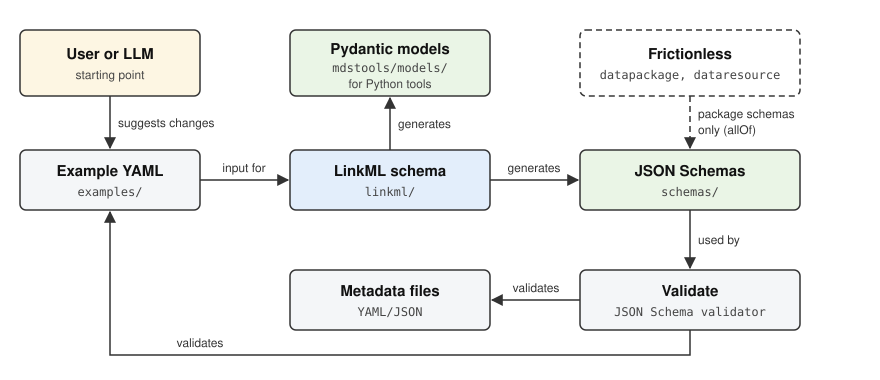

Tools

The mdstools Python package generates the schemas from LinkML and works with metadata files: it flattens them to Excel or CSV, enriches them with descriptions and examples from the schemas, validates them, and migrates them to newer schema versions.
Installation: set up
mdstoolswith pixi or pip.Usage: the command-line interface and the Python API.
Schema generation: how the JSON Schemas and Pydantic models are generated from LinkML.
API reference: the
mdstoolsmodules.